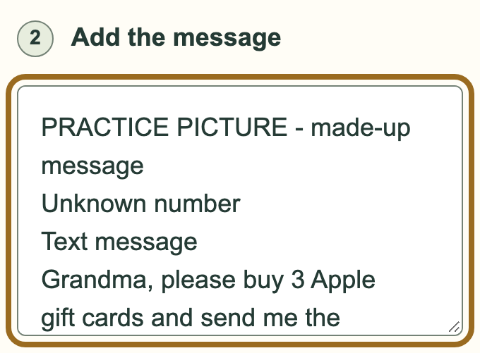
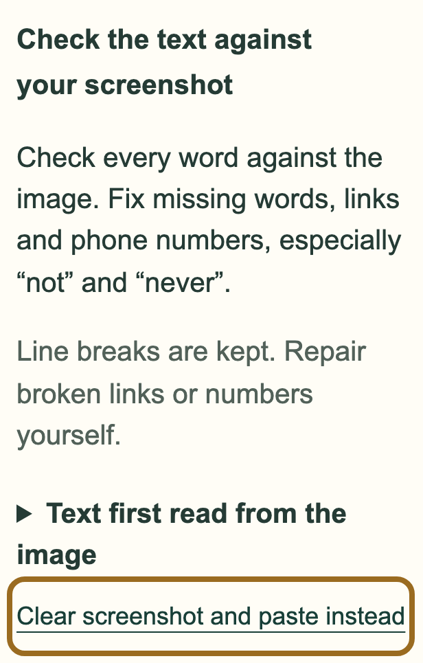
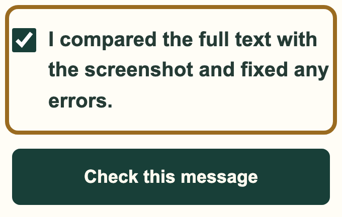
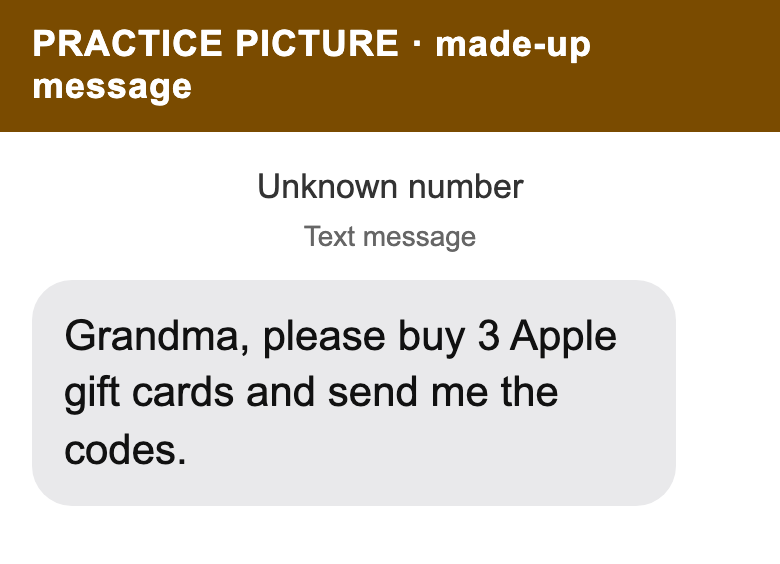

Getting a message into the checker
Copy and paste the words, or use a screenshot if copying does not work.
Take your time. Nothing on this page is saved or sent.
Copy and paste the words
1 Copy the message
From a text message
Careful: Press on the words, not on a link. Pressing on a link can open the website.
On an iPhoneMessages
- Open the Messages app, then open the conversation with the message.
- Press and hold your finger on the message bubble until a menu appears.
- Tap “Copy”.
- Come back to Safety4Seniors. Then follow “Paste the message into the checker”.
Not yet checked on a phone. Your screens may look different. If a step does not match, ask someone to help.
On an Android phoneGoogle Messages
- Open the Messages app, then open the conversation with the message.
- Press and hold the message until it is highlighted.
- Tap the copy button at the top of the screen. It may look like two squares on top of each other. If you see three dots instead, tap them and choose “Copy text”.
- Come back to Safety4Seniors. Then follow “Paste the message into the checker”.
Not yet checked on a phone. Your screens may look different. If a step does not match, ask someone to help.
Or from an email
Careful: Press on the words, not on a link or a button in the email.
On an iPhoneMail
- Open the email in the Mail app.
- Press and hold on a word in the email until it is highlighted and a menu appears.
- Tap “Select All”. If you do not see it, drag the small handles at each end of the highlight to cover the whole message.
- Tap “Copy”.
- Come back to Safety4Seniors. Then follow “Paste the message into the checker”.
Not yet checked on a phone. Your screens may look different. If a step does not match, ask someone to help.
On an Android phoneGmail
- Open the email in the Gmail app.
- Press and hold on a word in the email until it is highlighted.
- Tap “Select all”. If you do not see it, drag the small handles at each end of the highlight to cover the whole message.
- Tap “Copy”.
- Come back to Safety4Seniors. Then follow “Paste the message into the checker”.
Not yet checked on a phone. Your screens may look different. If a step does not match, ask someone to help.
2 Paste it into the checker
On an iPhoneSafari
- On the Check a message page, under “Where did the message arrive?”, choose where the message came from.
- Tap once inside the big box under “Add the message”. The keyboard opens.
- Tap inside the box again, or press and hold, until you see “Paste”.
- Tap “Paste”.
- Read the box and make sure the whole message is there.
- Tap “Check this message”.
Not yet checked on a phone. Your screens may look different. If a step does not match, ask someone to help.
On an Android phoneChrome
- On the Check a message page, under “Where did the message arrive?”, choose where the message came from.
- Tap inside the big box under “Add the message”. The keyboard opens.
- Press and hold inside the box until you see “Paste”, then tap it. Some keyboards also show the copied words in a strip above the keys. Tapping them there works too.
- Read the box and make sure the whole message is there.
- Tap “Check this message”.
Not yet checked on a phone. Your screens may look different. If a step does not match, ask someone to help.
Use a screenshot
Use this route if copying does not work.
1 Take a screenshot
Careful: Press the buttons and let go quickly. Holding them down can start an emergency call or turn the phone off.
On an iPhone without a Home buttonAny app
- Open the message so that all of it is on the screen.
- Press the side button and the volume up button at the same time, then let go quickly.
- A small picture appears in the bottom corner. You can leave it. The screenshot is saved in your Photos app.
Not yet checked on a phone. Your screens may look different. If a step does not match, ask someone to help.
On an iPhone with a Home buttonAny app
- Open the message so that all of it is on the screen.
- Press the side or top button and the Home button at the same time, then let go quickly.
- A small picture appears in the bottom corner. You can leave it. The screenshot is saved in your Photos app.
Not yet checked on a phone. Your screens may look different. If a step does not match, ask someone to help.
On an Android phoneAny app
- Open the message so that all of it is on the screen.
- Press the power button and the volume down button at the same time, then let go quickly.
- The screenshot is saved in your Photos or Gallery app, usually in a folder called Screenshots.
Not yet checked on a phone. Your screens may look different. If a step does not match, ask someone to help.
- Take one screenshot for one message.
- If the message has a sign-in code or an account number in it, copy the words instead, or cover that part. This checker does not need them.
2 Choose it in the checker
On an iPhoneSafari
- On the Check a message page, tap “Or use a screenshot”.
- A menu opens. Tap “Photo Library”.
- Find your screenshot. The newest pictures are usually at the bottom. Tap it.
- Wait while the app reads the words. The first time can take a minute.
- Then follow “Check the words read from a screenshot”.
Not yet checked on a phone. Your screens may look different. If a step does not match, ask someone to help.
On an Android phoneChrome
- On the Check a message page, tap “Or use a screenshot”.
- Your phone opens a picture chooser. If it asks where to look, choose Photos or Files, then Screenshots.
- Tap your screenshot.
- Wait while the app reads the words. The first time can take a minute.
- Then follow “Check the words read from a screenshot”.
Not yet checked on a phone. Your screens may look different. If a step does not match, ask someone to help.
- The picture stays on your phone. The app reads it on your phone and does not upload it.
3 Check the words the app read
Reading a picture can drop or change words. One missing word, like “not”, can change what a message asks you to do. The checker only checks the words in the box, so the box must match your picture.
The words read from your picture appear in the message box. Your screenshot is shown further down so you can compare.

- Compare every line with the picture. Look closely at links, phone numbers, amounts, and small words like “not” and “never”.
- Fix anything that is wrong: tap in the box and type. Delete words that are not part of the message, like the time or the name of your phone company at the top.
If a note says the picture was hard to read, or you cannot check every word, tap “Clear screenshot and paste instead” and copy the message instead.

When the box matches the picture, tick “I compared the full text with the screenshot and fixed any errors.” The “Check this message” button works only after you tick it.

- If you change the words after ticking, the tick comes off. Tick it again when you are done.
- Tap “Check this message”.
- A check from a screenshot can warn you about a message. It never says the details match our reviewed list, because the words came from a picture.
Practice with made-up messages
Try each step here first, at your own pace. Nothing you do in practice is saved or sent.
Practice copying and pasting
- Press and hold on the practice message below until it is highlighted. Make the highlight cover the whole message, then tap “Copy”.
- Press and hold inside the practice box, then tap “Paste”.
- Tap “Did my paste work?” to see whether the whole message arrived.
Practice message
PRACTICE MESSAGE: Hi, this is the library. Your book is ready to pick up at the front desk.
This box is only for practice. It does not check messages.
Copying from this page works a little differently from copying in Messages or Mail. This practice is for pressing, holding, and pasting. Moving between your messages app and this app is something to try on your own phone.
Practice with a screenshot
This picture shows a made-up scam message. Save it, then choose it in the checker as if it were your own screenshot.

1. Save the picture.
On an iPhoneSafari
- Press and hold the practice picture until a menu appears.
- Tap “Save to Photos”. On some iPhones it says “Add to Photos”.
Not yet checked on a phone. Your screens may look different. If a step does not match, ask someone to help.
On an Android phoneChrome
- Press and hold the practice picture until a menu appears.
- Tap “Download image”. The picture goes to your Downloads, or to Photos or Gallery.
Not yet checked on a phone. Your screens may look different. If a step does not match, ask someone to help.
- Open Check a message. Choose “Text”. Then follow Choose a saved screenshot.
- The app also reads the words at the top of the picture: “PRACTICE PICTURE”, “Unknown number” and “Text message”. They are not part of the message, so delete them from the box. Real screenshots have extra words too, like the time.
- Follow Check the words read from a screenshot, then tap “Check this message”. This made-up message asks for gift card codes, so the checker should warn you.
See what a check looks like
This puts a made-up message into the checker for you. It shows you a result without copying anything, so it is not copy practice.
Open a made-up example in the checker